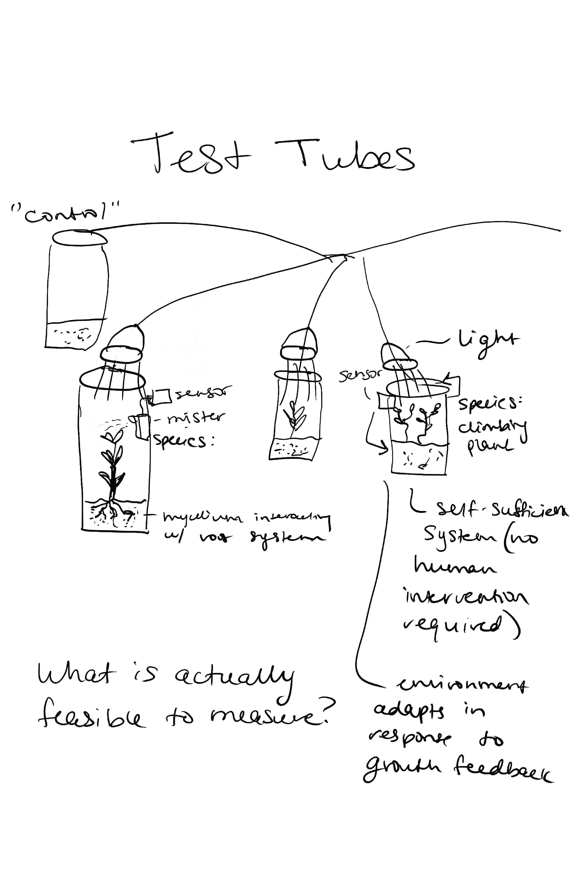
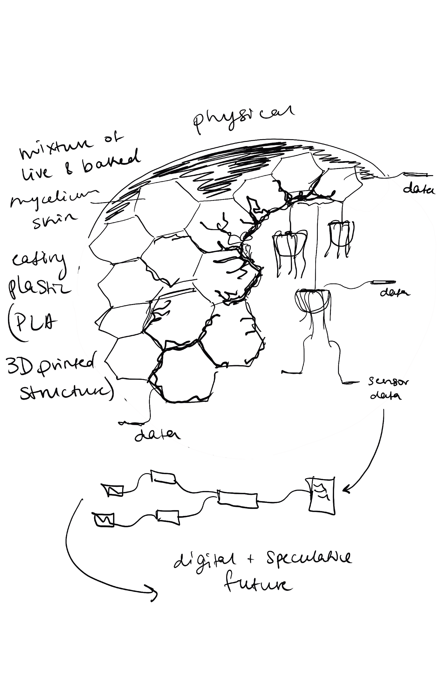
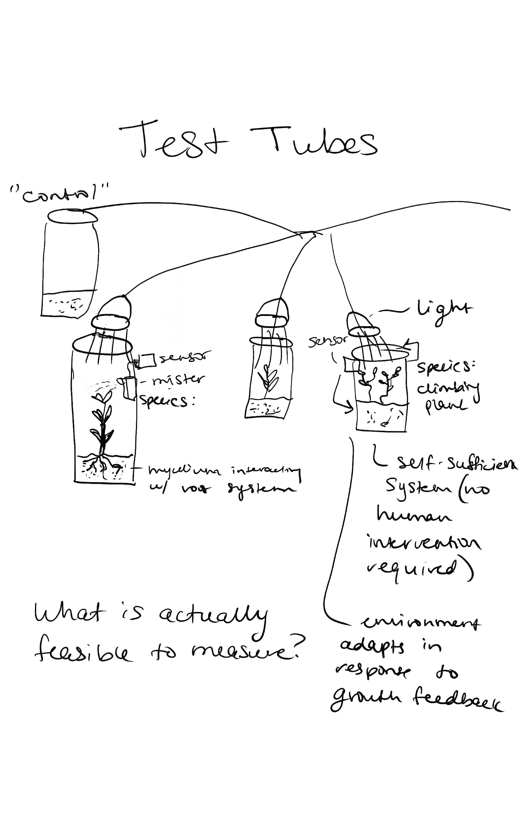
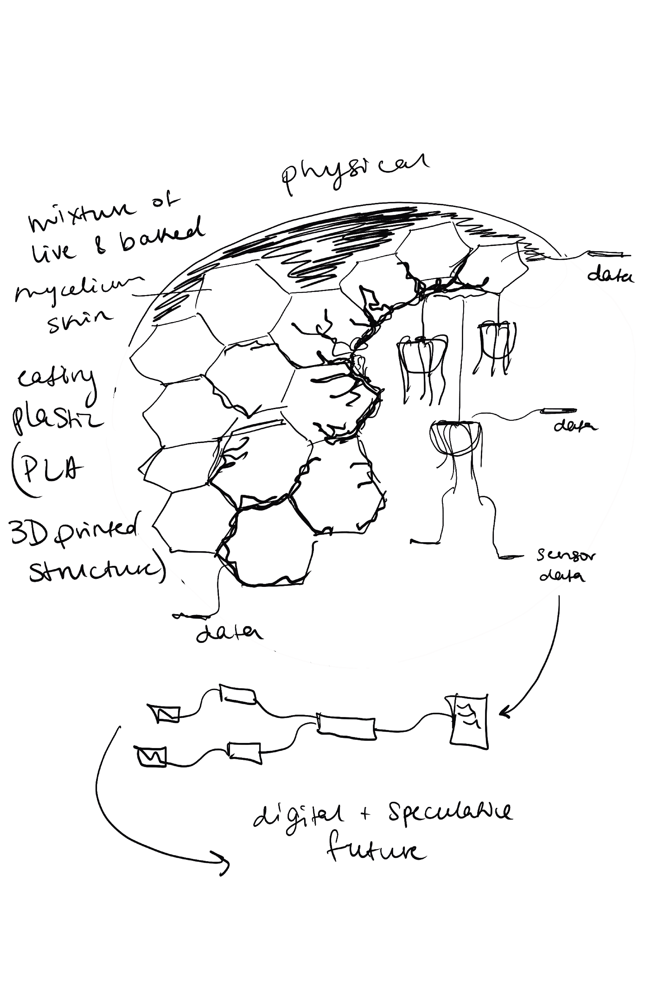

The Error of the Unseen
This project examines how spatial attention is shaped by the invisible and intangible — forces that occupy space without being seen. It locates this inquiry in the gap between physical and digital space: a threshold with its own spatial properties and its own logic of error.
Drawing serves as the attentional practice through which this gap is investigated. Rooted in the embodied relationship between hand, pen, and paper, drawing is a form of thinking made physical — a trace of where attention moved through space. This project asks whether that embodied cognition survives translation into the digital, or whether something is irretrievably lost at the threshold.
Error in the physical space is almost always permanent, especially when it comes to sketching. Sketching in pen is permanent, and even when sketching in pencil, the eraser is not as instantaneous as ctrl+z. In the digital space, some error can be undone almost instanteously, while some error has record that can be traced back forever, or can even result in system failure.
What do we do with the gap between the physical and the digital? Does it need to be merged? Is it separate? How can the digital become spatial? What does error look like in this system?
For this week's practice, instead of sketching on pen to paper, I sketched on my iPad instead of in my notebook. I wanted to explore how the digital medium might change the way I draw, and how it might affect my spatial attention. I found that drawing on the iPad allowed me to easily undo and redo my sketches, which encouraged me to experiment more and take more risks with my drawings. However, I also found that the lack of physical feedback from the pen and paper made it harder for me to control my strokes and create finer details, and different hatching techniques in my sketches. Even though there are more readily available brushes on Procreate, it felt limiting depending on the brush I was using. It felt less like art and more like a way to quickly produce and communicate ideas more easily. Because it felt less permanent, I felt myself taking less care with each stroke. The page was less precious.
 


